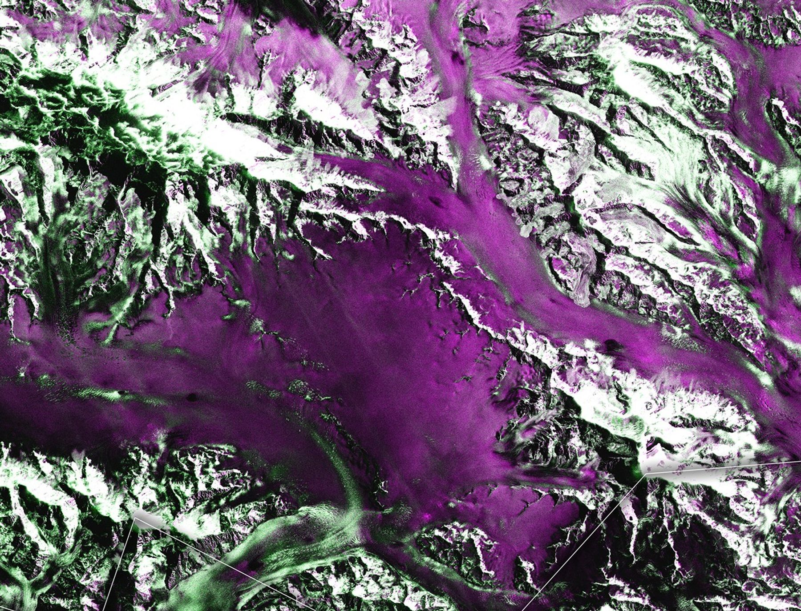
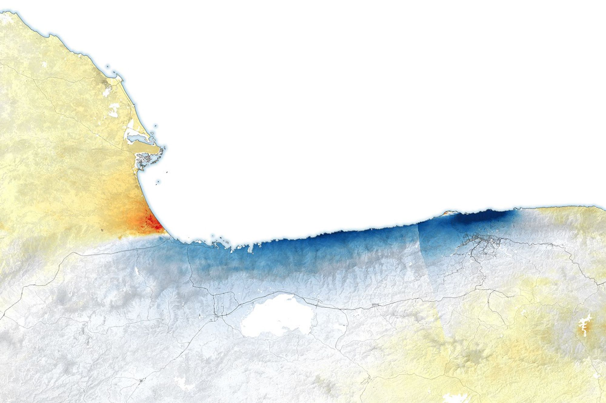
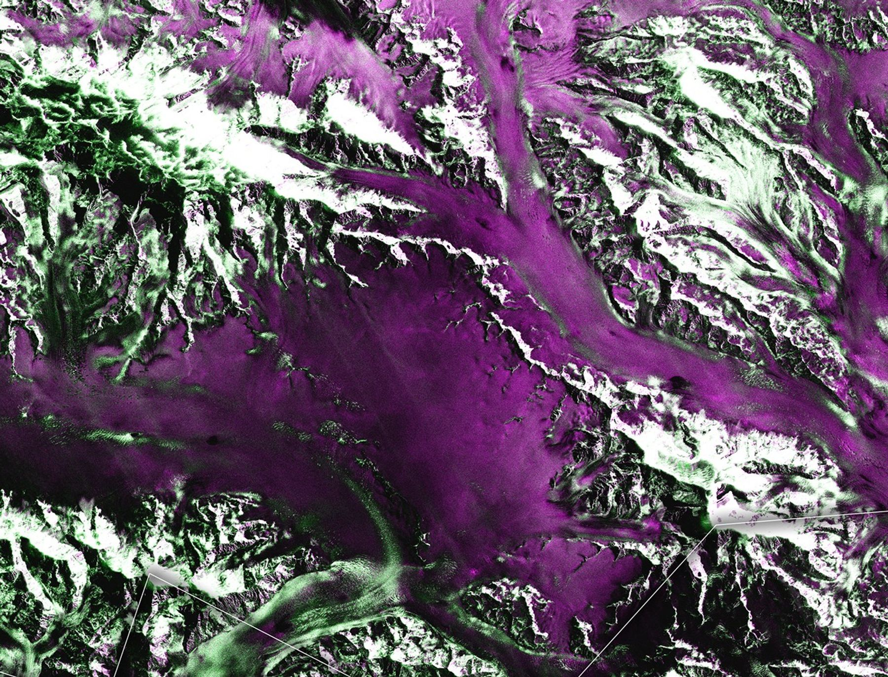

NASA–ISRO NISAR
Earth’s surface,
seen by radar.
Surface Atlas uses NASA and ISRO’s NISAR satellite to show how Earth’s surface changes. Compare radar images before and after an event, measure ground motion where data is available, and see where the satellite has collected new observations.

Start with the map
See where NISAR looked
On the coverage map, each tilted box is a scene footprint: the area covered by one radar acquisition or pair. The thick outline marks your selection. Overlapping boxes show where different scenes cover some of the same ground.
Try the Central Valley coverage map ↗Read the radar image
NISAR sends microwave pulses and measures the echoes. Backscatter images show the strength of the return, which depends on things like surface roughness, moisture, and viewing angle. Interferograms use the phase difference between passes to study surface motion.
Learn how to read the layers ↓Track the satellite and new scenes
Follow NISAR’s estimated position as it orbits Earth. The scene browser checks NASA’s archive for new releases. Radar images appear after processing and publication, so their acquisition times are usually earlier.
Open the live orbit ↗STUDY AREAS
What the radar saw

VENEZUELA · JUN 2026
Two earthquakes, three radar pairs
Sample measured ground movement across the northern coast.
Open displacement map ↗
ALASKA–YUKON · DEC 2025
Debris on Hubbard Glacier
Swipe between NASA images taken before and after the St. Elias earthquake.
Compare the images ↗Browse NISAR acquisitions
Inspect scene footprints and open their NASA archive records.
RADAR GUIDE
How to read the layers
Displacement and viewing geometry
Interferometric SAR compares radar phase from repeat passes. The Venezuela layers give signed, relative motion along the radar line of sight in centimeters. Each pair has its own viewing geometry and reference. Treat the point chart as a comparison across pairs, since all three span the same earthquakes.
Backscatter and polarization
HH and VV transmit and receive in the same orientation. HV and VH use crossed orientations. Co-polarized returns can emphasize double-bounce scattering from standing water and vertical structures, while cross-polarized returns can emphasize scattering from branches and other complex objects. Geometry, roughness, and moisture influence all channels.
Glacier imagery and surface roughness
In NASA’s Hubbard Glacier composite, bright green includes rough surfaces. Newly visible green patches on the second date are consistent with rock, snow, and ice deposited by landslides and avalanches. The composite has no per-pixel calibrated values in this viewer.
What blank map areas mean
Venezuela uses the source LERC validity mask. Missing coverage is transparent and the inspector reports no valid sample. The maps show preliminary relative observations, and colors reach their endpoints at ±60 cm. The inspector shows the sampled source value even beyond that display scale.
SOURCES